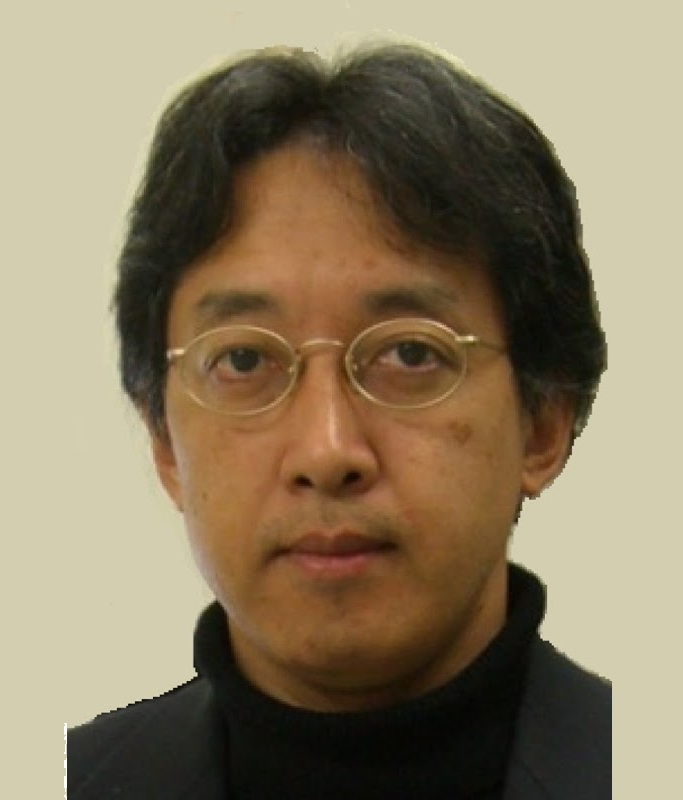

開催にあたってAbout
東京科学大学の小池英樹教授が2027年3月をもって定年退官されるにあたり、これまでの教育・研究活動を振り返る機会として、「小池英樹教授 最終講義」を開催いたします。
当日は、14:00より小池教授による最終講義、16:30より懇親会を予定しています。
皆様のご参加を心よりお待ちしております。準備のため、参加予定調査へのご協力をお願いいたします。
参加予定調査を受け付けています。Googleフォームからご回答ください。（別タブで開きます）

プログラムProgram
2027年3月14日 日曜日
暫定小池研同窓生の集い
（小池研同窓生および研究室関係者の方のみ）
Lunch
昼食
最終講義
懇親会
※ スケジュールは暫定です。今後変更となる場合があります。時刻は日本標準時（JST）です。
会場Venue
参加予定調査Attendance Survey
参加予定調査 受付中
準備のため、各プログラムへの現時点での参加予定をお知らせください。
お一人につき1件のご回答をお願いします。スケジュールは暫定です。
参加予定を回答する（別タブで開きます）